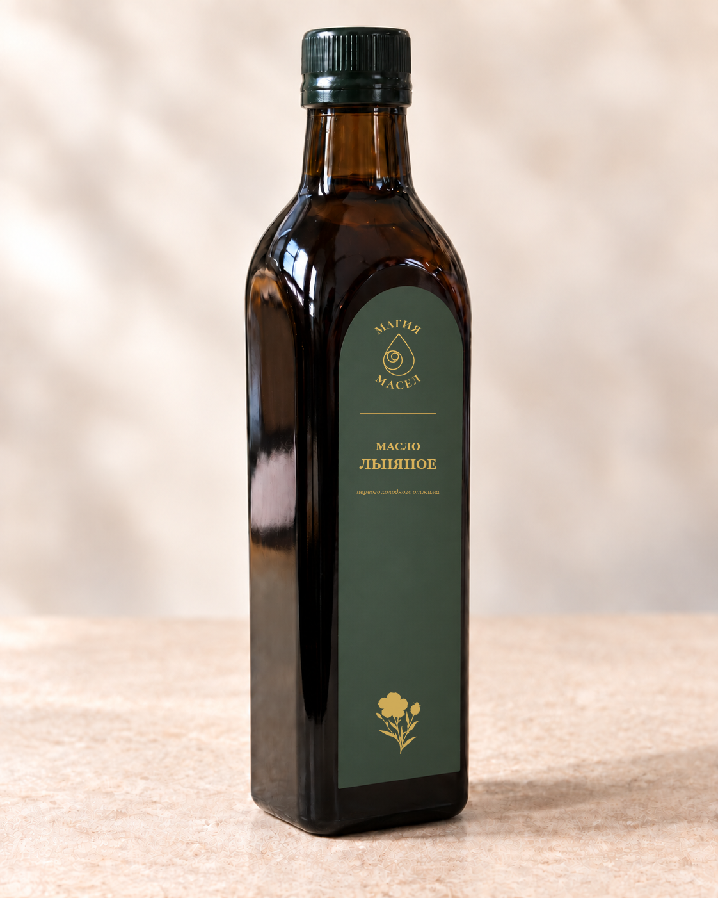
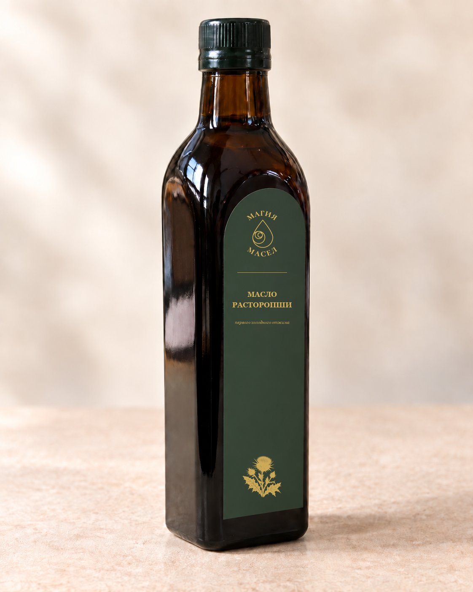

Этикетка сгенерирована пустой, логотип «МАГИЯ МАСЕЛ», название и ботанический знак наложены вектором. Текст чёткий, у каждой позиции своя гравюра. «250 МГ» с физического тиража сюда не попадает — мы его просто не печатаем.

